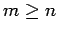
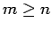

Inhalt Index DeskTop Bronstein

 Lineare Algebra Lineare Gleichungssysteme Überbestimmte lineare Gleichungssysteme Überbestimmte lineare Gleichungssysteme und lineare Quadratmittelprobleme
Lineare Algebra Lineare Gleichungssysteme Überbestimmte lineare Gleichungssysteme Überbestimmte lineare Gleichungssysteme und lineare Quadratmittelprobleme


Das lineare Gleichungssystem
besitze eine rechteckige Koeffizientenmatrix  mit . Die Matrix
mit . Die Matrix  und der Vektor der rechten Seite seien bekannt. Gesucht sei der Vektor
und der Vektor der rechten Seite seien bekannt. Gesucht sei der Vektor  Wegen  spricht man von einem überbestimmten System. Sein Lösungsverhalten und gegebenenfalls seine Lösung können z.B. mit dem Austauschverfahren bestimmt werden.
Wegen  spricht man von einem überbestimmten System. Sein Lösungsverhalten und gegebenenfalls seine Lösung können z.B. mit dem Austauschverfahren bestimmt werden.